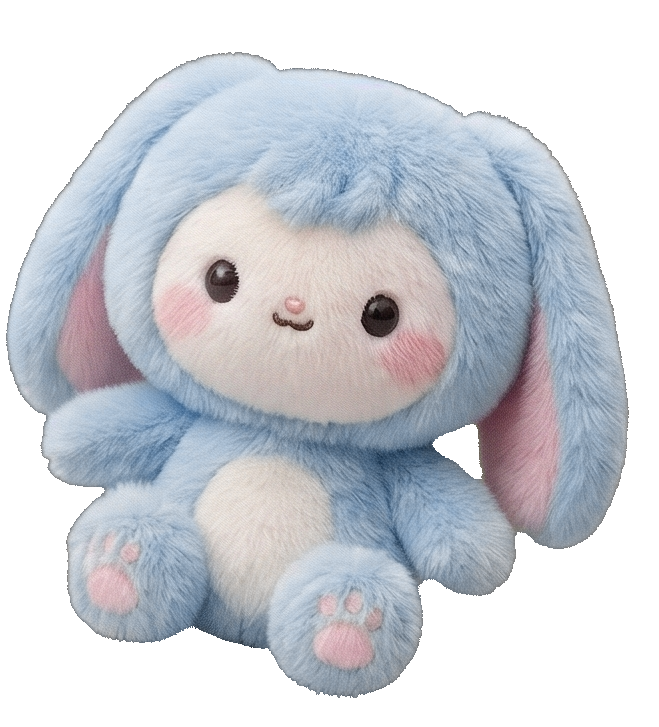

Uchiyoso Maker
あなたの「うちよそ」を、もっと特別に。
創作活動を支援するデザインツールセット。
美しい関係性グラフやSSを、
まるで魔法のように直感的に作成できます。
♥
LOVE
CREATION
★
DREAM
STORY
♦
RELATION
UCHIYOSO
♥
LOVE
CREATION
★
DREAM
STORY
♦
RELATION
UCHIYOSO
NEW Update
bar_chart
グラフを作る
関係性を可視化しよう
image
画像生成
edit_note
SSエディタ
NEW
style
ラベルメーカー
NEW
layers_clear
背景除去
NEW
calendar_month
カレンダー
日付を彩る
share
ページをシェアする
